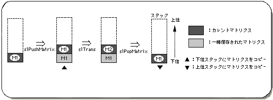

Return to previous page | Return to menu | Go to next page
This section describes the hierarchical structure of objects in a matrix using a stack. In short, this means having a relationship between multiple objects. This relationship is generally called parent-child structure .
A stack is a structural model for efficiently handling a matrix. This is shown in Figure 5-2, and the functions for performing this operation are “slPushMatrix” and “slPopMatrix”.
The matrix at the lowest level in the stack is called the current matrix, and various matrix conversion operations are performed on the current matrix.

Note) There are 20 stacks, and the matrix is nested in order from the upper stack to the lower stack.
SGL maintains a matrix called the environment matrix as the current matrix when the matrix environment is initialized.
This defines the root of the 3D coordinate environment of SGL. If this is rewritten, various conversion operations may not be performed correctly.
Therefore, SGL supports “slInitMatrix” as a library function to initialize the stack and various matrix variables.